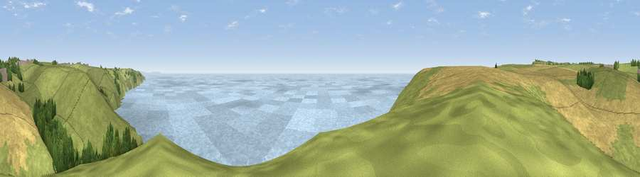

Viewpoint near Worth Matravers
#1534 in England · top 13% of its area beats it · near Worth Matravers · path 294 mWhere it is
The exact computed spot (SY 97225 76025). Click the marker for map links.
Public access: the nearest public right of way is about 294 m away — the final stretch may cross private land. Computed from Natural England's CRoW access layer and OpenStreetMap rights of way — not the legal definitive map. Always verify locally.
The view, rendered

A 360° render of this exact spot computed from the terrain model, tree cover and land cover — summer colours, afternoon light, calibrated against photographs of famous viewpoints. Real trees, hedges and buildings will differ in detail.
The panorama
Grey silhouette: terrain skyline in each direction (720 bearings, Earth curvature and refraction included). Dashed green: skyline with trees (+15 m) and buildings (+8 m) as obstacles. Blue strip: how far the ground is visible on each bearing.
Where the view opens
Wedge length = distance to the farthest visible ground on that bearing (vegetation-aware). Rings at 10, 25 and 50 km.
What fills the view
44% water · 32% grassland · 20% cropland · 4% woodland
Angular shares of the visible panorama (visual magnitude), not map area. Landscape diversity 0.51 (0–1 Shannon).
Key numbers
More beautiful places nearby
The staircase of upgrades: each row has a higher view potential than everything closer. Driving times are estimates from straight-line distance, calibrated against real road routing — check an actual route before setting out.
| Place | Direction | Drive | Score |
|---|---|---|---|
| Viewpoint near Worth Matravers | WNW · 1 km | ~4 min | 82.9 |
| Viewpoint near Worth Matravers | WNW · 3 km | ~6 min | 86.0 |
| Viewpoint near Kimmeridge | WNW · 4 km | ~10 min | 87.5 |
| Viewpoint near Abbotsbury | WNW · 42 km | ~62 min | 89.0 |
| Viewpoint near West Bexington | WNW · 44 km | ~64 min | 89.5 |
| The Knoll | WNW · 45 km | ~65 min | 91.0 |
50.58395, -2.04056 · source: screening · position refined by local search. Computed location — check access rights before visiting.